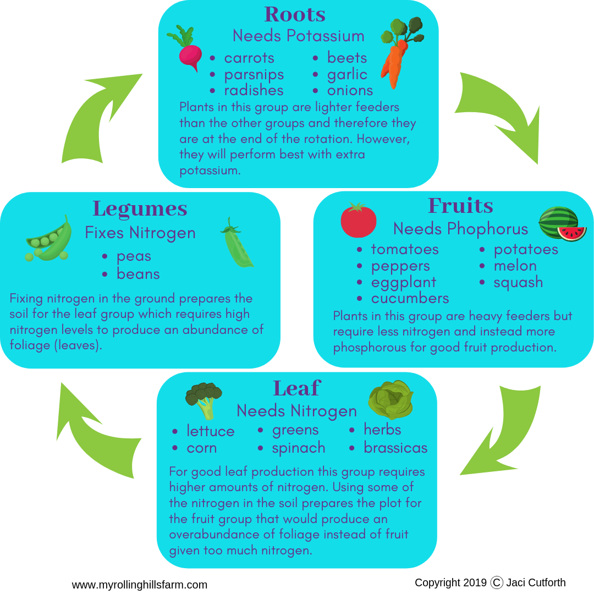

Novice Farmers helping
this is made to help novice farmers by teaching agricultural techniques
we include some techniques like crop rotation. we added pics and videos.
this website also shows farmer the availabilty of fertilizers or pesticides in a particular area.we are providing goole maps here.

https://www.google.com/search?rlz=1C1CHBF_enIN962IN962&tbm=lcl&q=fertilizer+shop+near+me&spell=1&sa=X&ved=2ahUKEwjCqIbjjprzAhUBxzgGHXxxD0YQBSgAegQIAxAm&biw=1280&bih=587&dpr=1.5#rlfi=hd:;si:16822703166890260380,l,ChdmZXJ0aWxpemVyIHNob3AgbmVhciBtZSIDkAEBkgETZmVydGlsaXplcl9zdXBwbGllcqoBFxABKhMiD2ZlcnRpbGl6ZXIgc2hvcCgA;mv:[[13.849814499999999,79.6366189],[13.5709725,79.0126871]]